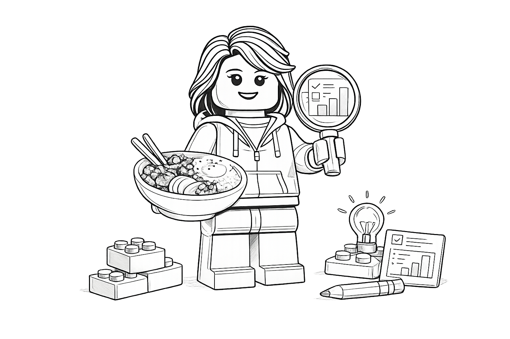

Hyojin Yang, a Stockholm-based UX/Product Designer
Download CV ↓I focus on owning ambiguous problem spaces and helping teams find the right problems to solve. I work end-to-end—from discovery and validation to defining MVPs and shaping product direction.
I partner closely with PMs and engineers, stay close to users, and balance user needs with business goals and technical constraints to deliver outcomes that scale.
Frame problems, validate ideas, and define what to build next.
Design flows, systems, and interactions that support real workflows.
Move teams from insight to shipped outcomes with clarity and alignment.
Define principles, direction, and experience foundations that guide teams.
Establish research practices that inform decisions beyond individual teams.
Help teams grow confidence, autonomy, and consistency in how they design.